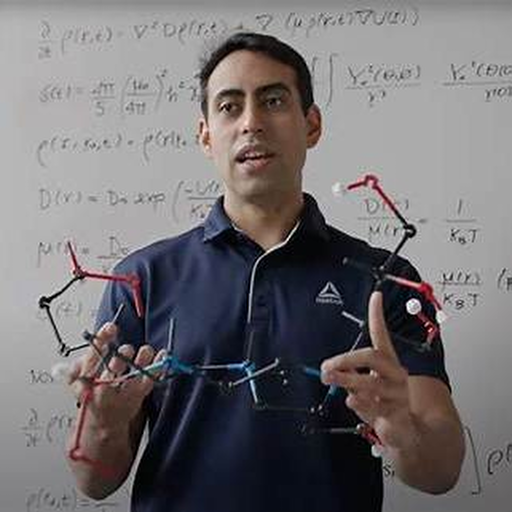
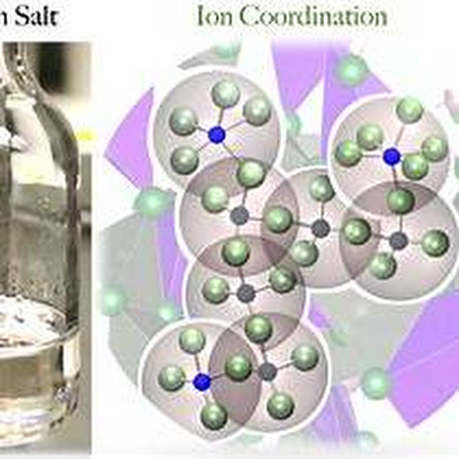
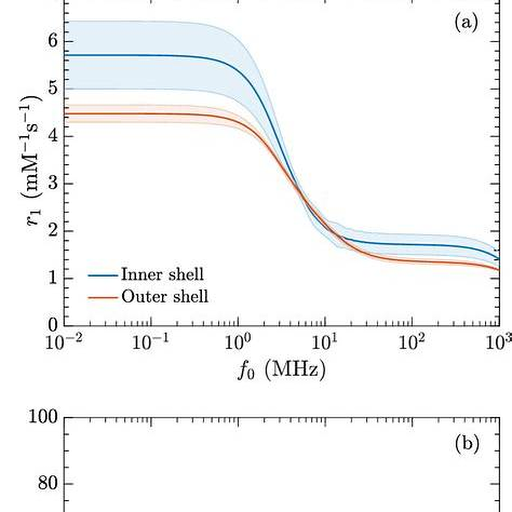
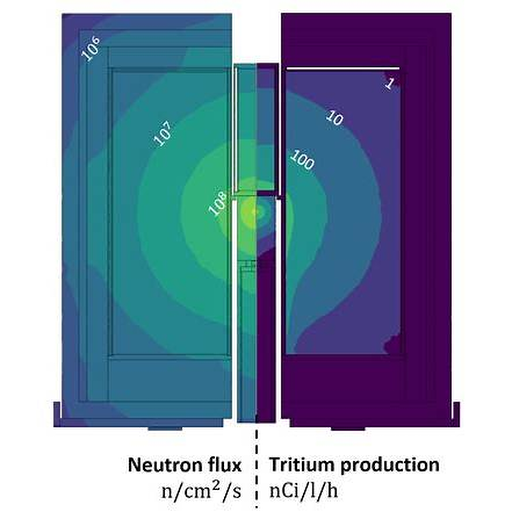

Computational Chemistry · Statistical Mechanics · Molecular Simulation
Thiago J. Pinheiro
dos Santos
I develop physics-based computational approaches to understand molecular and ionic systems, with a current focus on molten salts for nuclear energy and machine-learning-driven molecular simulation.
Thiago Pinheiro, Ph.D.
Computational Chemist
Current focus
From electronic structure to thermodynamics.
I combine density functional theory, molecular dynamics, statistical mechanics, free-energy methods, and machine-learning interatomic potentials to connect atomistic insight with measurable properties.
About
Physics-based simulation of complex molecular systems.
I am a Postdoctoral Research Associate in the Chemical Separations Group at Oak Ridge National Laboratory (ORNL). My current research focuses on the molecular-level thermodynamics and properties of molten salts relevant to nuclear fission and fusion technologies.
I use density functional theory, molecular dynamics, statistical mechanics, free-energy methods, and machine-learning interatomic potentials to connect high-accuracy electronic-structure calculations with simulations at experimentally relevant length and time scales.
I am also interested in emerging computational approaches at the intersection of molecular simulation and quantum computing. During my Ph.D. at Rice University, I developed molecular-level theories and simulations of NMR relaxation and MRI contrast agents, which continue to shape my broader interests in molecular modeling.
Research
Research directions
My work bridges theory, simulation, and data-driven modeling across nuclear materials, liquids, and complex molecular systems.
01Nuclear materials
Molten Salts & Nuclear Energy
Atomic-scale structure, thermodynamics, and transport in molten salts relevant to nuclear fission, fusion, and chemical separations.
02Simulation + AI
Machine-Learning Interatomic Potentials
Physics-aware use of machine-learning potentials to extend quantum accuracy to the length and time scales needed for statistically converged molecular simulations.
03Electronic structure
Quantum Computing & Electronic Structure
Quantum-classical approaches for challenging electronic-structure problems, including molten salts relevant to tritium chemistry in fusion blanket materials.
04Biophysical modeling
Statistical Mechanics, NMR & Molecular Biophysics
Molecular theories and simulations of NMR relaxation, complex fluids, and gadolinium-based MRI contrast agents.
Visuals
Snapshots of my work
A small visual gallery highlighting presentations and representative figures from my research areas.




Selected work
Publications
Stability and thermophysical properties of solid and molten BeF2 via density functional theory and machine learning potentials.
T. J. Pinheiro dos Santos, L. D. Gibson, R. Chahal-Crockett, S. Banerjee, M. Taillefumier, A. Sedova, J. Schorne-Pinto, R. Messerly, and V. S. Bryantsev. Digital Discovery.
DOI ↗Quantum Computations on Fusion Blanket Molten Salts.
S. Das, T. J. Pinheiro dos Santos, S. Bhowmik, M. Bazayeva, Z. Li, A. Shajan, et al. arXiv:2606.30402.
arXiv ↗In Situ UV–vis Quantification of Chlorobasicity in Binary Molten Chlorides.
K. Buttice, S. Banerjee, T. J. Pinheiro dos Santos, E. Kim, Q. Yang, A. Ramos-Ballesteros, et al. The Journal of Physical Chemistry B.
DOI ↗Extended molecular eigenmodes treatment of dipole-dipole NMR relaxation in real fluids.
T. J. Pinheiro dos Santos, B. Orcan-Ekmekci, W. G. Chapman, P. M. Singer, and D. Asthagiri. The Journal of Chemical Physics 163, 184105.
Paper ↗Molecular-Level Insights into the NMR Relaxivity of Gadobutrol using Quantum and Classical Molecular Simulations.
T. J. Pinheiro dos Santos, C. C. Fraenza, G. A. L. Souza, E. Pelegano-Titmuss, D. Asthagiri, S. G. Greenbaum, W. G. Chapman, and P. M. Singer. Chemical & Biomedical Imaging 3(9), 615–629.
DOI ↗Theory and modeling of molecular modes in the NMR relaxation of fluids.
T. J. Pinheiro dos Santos, B. Orcan-Ekmekci, W. G. Chapman, P. M. Singer, and D. Asthagiri. The Journal of Chemical Physics 160, 064108.
Paper ↗Recent
Highlights & recognition
Aug 2026
Discussion Leader
“Interdisciplinary Innovations with Ionic Liquids and Molten Salts,” Gordon Research Symposium on Ionic Liquids.
May 2026
Best Oral Presentation Award
Nuclear Materials Session, 14th Annual ORPA Research Symposium.
Nov 2025
Best Postdoctoral Poster Award
Molten Salt Reactor Workshop 2025.
May 2025
Riki Kobayashi Prize
Rice University, Chemical and Biomolecular Engineering.
Contact
Let’s connect.
Oak Ridge National Laboratory · Oak Ridge, Tennessee
I am interested in collaborations spanning statistical mechanics, molten salts, molecular simulation, and machine-learning-enabled computational chemistry.